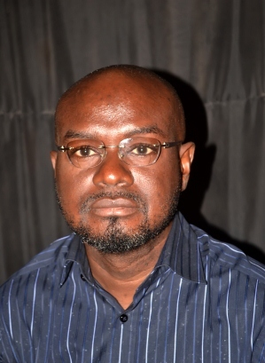

Dr. O.P. Durojaye is a Chief Lecturer at the Department of Mathematics and Statistics School of Pure and Applied Sciences of the Federal Polytechnic Ilaro, Ogun State of Nigeria.He was a former head of department General Studies between 2004 and 2005 and later head of Department of Mathematics and Statistics between 2005 and 2009
mathematics and statistics
You are welcome to the Department of Mathematics and Statistics, School of Pure and Applied Sciences, a department that has produced a team of statisticians for both private and public sectors of the national economy and the world at large. The achievement of this feat is in line with the vision and mission statements of the Federal Polytechnic, Ilaro, which are “To be a market leader in the provision of Technically Skilled Manpower for Nigeria and Globally Competitive Economy” and “To provide Opportunities of Qualitative Technical Education in a Serene and Conductive Learning Environment to all Eligible Nigerians and others who will drive the National and the Global Industrial Economy” respectively. The department was established in 2004 under the supervision of the Head of department. The NBTE resource inspection team visited the department in the same year 2004 and upon the successful resource inspection, approval was granted by NBTE to run the ND programme in Statistics. The department admitted the first set of ND Statistics students in 2004/2005 academic session. The proposal to run the HND programme in Statistics was presented to NBTE Resource Inspection Team in 2007 and was granted that same year. The first set of students was admitted in to the HND programme in Statistics in 2008/2009. The department has since then been running both ND and HND programme in Statistics. The department is divided into Mathematics and Statistics units headed by the respective Heads of units. Each Head of unit is responsible for the running of his unit and reporting to the Head of the department.
Entry requirement (ND)
WAEC, GCE [O/L], SSCE, NECO, NABTEB or equivalent with Credits in English Language, Mathematics, a basic Science and any two of the following: Economics, Geography, Government/History, Further Mathematics, Physics, Chemistry, Biology/Agricultural Science, Typewriting. Electrical Installation & Maintenance Work, Electronics, Radio/ Television and Electronics Works, Computer Craft Practice, And Relevant NTC/NBC &NVC Trades
Entry requirement (HND)
Applicants seeking Higher National Diploma [HND] admission must possess the basic entry requirements for the National Diploma Programme. In addition, the applicant must possess the ND in Statistics obtained at not less than the Lower Credit level from the Federal Polytechnic, Ilaro or from any other Polytechnic accredited for the programme, or its recognised equivalent plus a minimum of one [1] year post qualification relevant industrial work experience. The candidate should also request his or her institution to forward his or her official academic transcript under confidential cover to the Registrar, Federal Polytechnic, Ilaro.
jamb cut off mark
computer science offivial cut off mark is 150
careers in Mathematics and statistics
Some careers in Mathematics and statistics are:
- Avionic Operations Analyst
- Big data analyst
- Budget analyst
- Business metrics analyst
- Foreign exchange trader
- See more
meet our lecturers

Mr. Akinbo is a Statistician and Data Analysis specialist. He holds B.Sc. and M.Sc. degrees in Statistics as well as a Post Graduate Diploma in Computer Science. He is a seasoned polytechnic lecturer of almost three (3) decades and presently a chief lecturer of over five (5) years in the department of Mathematics and Statistics.
Ezekiel Imekela Donaldson hails from Ojah, Akoko-Edo Local Government area of Edo state. He had his primary and secondary education at Eshioza Primary School and Oza Grammar School, all in Ojah, Edo state. The later proceeded to College of Education, Ekiadolor, Benin City, and obtained NCE in Mathematics and Economics with Upper Credit. An Alumnus of University of Benin, Benin-City where he holds B.Sc. (Hons) in Pure Mathematics with Second Class Upper Division, University of Ibadan, where he obtained M.Sc. degrees in Epidemiology and Biostatistics, and Mathematics respectively
Publications: S. O. Bello and E.O Fatunmbi (2017); On the flow of an MHD viscous fluid over a porous plate.Journal of Mathematical Association of Nigeria.Vol. 44, No 2.Makanjuola, Olakunle Moses, Arogundade Lateef Adebayo, Bello, Sikiru Omolaja, Olanipekun, Adebola Rejoice and Lawal Adewale Rasheed. (2015) Assessment of Heavy Metal In Raw Meat Sold In Some Notable Garages In Ogun State, South-West, Nigeria. Academicians’ Research Centre.
I have worked in public sector with wide experience in banking industry that spanned over fifteen years before venturing into academics.I am currently engaged in lecturing, academic researches, journal publications, supervising students’ projects and any other academics related works including participating in academic conferences both locally and internationally.
Publications: Shomoye, I.A. et al (2015). The relevance of statistics in science and technology Advancement. IOSR Journal of Mathematics p (22-24).Shomoye, I.A and Shomoye A.R. (2015). Rule based Approach Towards Detecting Human Temperature. International Journal of computer science information technology (IJCSIT) p(85-92)
Mr. Ajibode, I.A. has first and second degree in Mathematics and Statistics from Lagos State University of Lagos respectively. He has over ten years’ experience in teaching and research at the Polytechnic and also consulting for students in higher institutions. He has attended many conferences and published in reputable journals locally and internationally
An academic member of staff with a creative teaching, mentoring and counselling duties. Passionate about making the world of mathematics relevant and hassle-free to all students. Education: Master of Science: Mathematics (University of Ibadan) Bachelor of Science: Mathematics (Olabisi Onabanjo University, Ago~Iwoye

I have conducted series of researches in the area of Econometrics, Statistical Quality Control, Total Quality Management and Data Mining/Machine Learning, some of which have resulted in a number of joint authored journal articles, local and international conferences. Several have been published in reputable international journals. I have also rendered assistance to a number of researchers in the areas of planning, analysis and interpretation of results.
Publications: Alabi N. O. and Are S. O. (2017): Smoothing non-stationary noise of the Nigerian Stock Exchange All-Share Index data using variable coefficient functions. Journal of Mathematical Theory and Modeling, ISSN 2224-5804 (paper) ISSN 2225-0522 (online) Vol. 7, No. 7, 2017. Olaiju O. A., Are S. O. and Ojuawo O. O. (2017). Roherer’s Index Prediction using Neural Network: The Ilaro Journal of Management, Arts, Science and Technology (TIJMAST).
Dr. Wale Adeboye is a Statistician and Data Analysis specialist. He parades National Diplomas (ND & HND), B.Sc., M.Sc. and PhD degrees in Statistics as well as Post Graduate Diploma in Planning, Research and Statistics. His experience dated back to his banking careers of over a decade and in the management of Security Services Company’s Finance and Operations. He has put in more than a decade of rigorous teaching and research at the polytechnic levels and Chartered Institute of Personnel Management (CIPM). He has many articles in reputable journals and co-authored two published books
I am Fatunmbi, Ephesus Olusoji (Ph.D.). a teacher of Mathematic both at Primary, Secondary and Tertiary Institution levels. I got a doctorate degree (Ph. D) in Mathematics in 2018, Master of Science (M.Sc.) degree in Mathematics (Applied Option) in 2011 from the prestigious University of Lagos, Akoka, Nigeria. I also obtained PGD Statistics with distinction from the Federal University of Agriculture, Abeokuta in 2008 while I got B.Sc.(Ed) in Mathematics from the University of Ado-Ekiti in 2006. I currently teach courses in Mathematics both at ND and HND levels at the Federal Polytechnic, Ilaro.
Aako Olubisi .L is an Assistant Lecturer in the department of Mathematics and Statistics. His research interest is the area of Distribution theory and Statistical Process Control. He is a current Ph.D. student at the University of Lagos, Akoka, Lagos.
A seasoned Mathematics teacher and whose specialization revolves around Functional Analysis with a keen interest in Harmonic Analysis.
Olusegun is a seasoned mathematician and data analyst, optimization analysis, strategy formulation and planning. I am a gifted problem solver with unique ability to assemble data and apply innovation solution. I process excellent leadership communication and interpersonal skills with the proven ability to perform superbly on critical assignment.
I am dynamic, honest and hardworking individual, a quick learner with a positive result oriented approach to work and competent in meeting deadlines with minimum supervision. Has concern for quality and good interpersonal relationship and yet understand being accountable for own responsibilities. I am a Higher National Diploma (HND) holder in Statistics from Akanu Ibiam Federal Polytechnic Unwana, Ebonyi State.